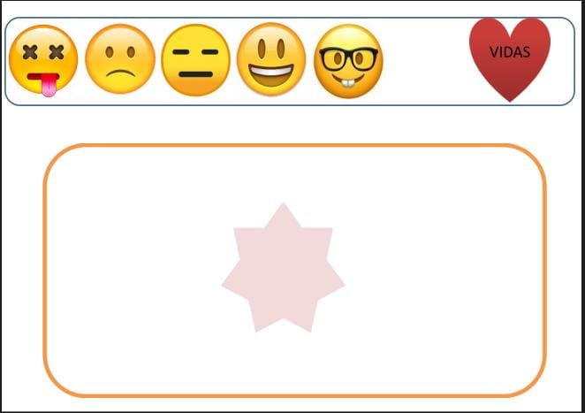

Olá!
O intuito desse site é promover e auxiliar, você docente, na contrução e desenvolvimento do ensino/aprendizagem para com seus educandos de forma simples, pratica e significativa, através de jogos interrativos, disponibilizados gratuitamente.
Sou o professor cabeça, e essa semana eu lhes apresento o Game da sabedoria :
O jogo consiste em desafios de perguntas e respostas, ao qual o professor como mediador, promove a interação do aluno com a material, ditando as regras e ajudando nos possiveis entraves.
Vídeo explicativo
Link para download de material impresso
AquiLista de recursos necessários
- Material impresso.
- Tampinhas plásticas.
- Letras de plástico, impressas, ou outros materiais que venha utilizar para os desafios.